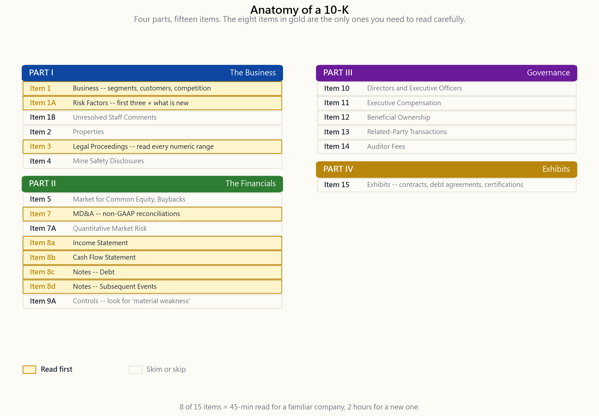
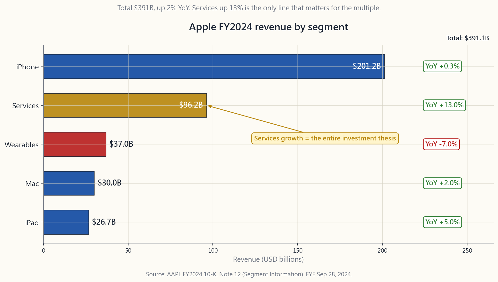

Side Lesson 02: How to Read a 10-K
1. Why This Is Important
The 10-K is the single document where the SEC requires a public company to tell the truth, in writing, signed by its CEO and CFO under personal criminal liability. It is the closest thing in capital markets to a sworn deposition — and unlike the glossy annual report mailed to shareholders, every word in the 10-K has been re-read by lawyers, auditors, and plaintiffs' counsel hunting for the next class action.
Four reasons every retail investor should know how to read one:
$400/seat Bloomberg analyst and the $0/seat retail investor are reading the same PDF. Whatever edge a professional has comes from interpretation, not from access. Week 8 already taught the three statements; this lesson teaches the wrapper around them — the parts most retail readers skip and most professionals read first.
curate. Earnings calls spin. The 10-K's Risk Factors and Legal Proceedings sections are written by lawyers whose job is to disclose enough that a future plaintiff can't claim the company hid anything. If something is going to blow up — a regulatory probe, a patent expiration, a customer concentration — it appears here first.
every 10-K ever filed for a phrase. Find every company that mentioned "going concern" last quarter. Find every filer with a "material weakness" in internal controls. This is institutional- grade screening for free, and almost no retail investor uses it.
linearly takes a full weekend. Reading it like a professional takes 45 minutes — because you know the eight items that matter, you
Ctrl-F for the four phrases that signal trouble, and you skip the
85% that is boilerplate. This lesson is that 45-minute discipline.
The deeper point is that alpha is rare: what little does exist for
a retail investor mostly lives in *reading the filings nobody else
reads*. Not in clever models. Not in faster data. In the unglamorous
discipline of opening EDGAR and using Ctrl-F.
2. What You Need to Know
2.1 10-K, 10-Q, 8-K — the three filings that matter
The SEC requires public companies to file three core periodic disclosures. The 10-K is annual, the 10-Q is quarterly (filed three times a year — the fourth quarter is folded into the 10-K), and the 8-K is event-driven, filed within four business days whenever something material happens between the periodic filings.
A 10-Q is a 10-K's lighter cousin: unaudited financials, abbreviated MD&A, and updates to the risk factors only if something has changed. You read 10-Qs to track quarter-on-quarter trends; you read 10-Ks to understand the business. The 10-Q is the heart-rate monitor; the 10-K is the annual physical.
The 8-K is the surprise. Items 1.01 (material agreement), 2.02 (results of operations — earnings releases live here), 4.01/4.02 (auditor change, non-reliance on prior financials), 5.02 (departure of officer), and 8.01 (other material events) are the ones with trading consequences. A 4.02 8-K — "the previously issued financial statements should no longer be relied upon" — is the single worst filing a company can make. It almost always precedes a stock-price collapse and frequently a delisting.
Filing deadlines are tiered by company size. Large accelerated filers (public float above $700M) file the 10-K within 60 days of fiscal year-end and the 10-Q within 40 days. Accelerated filers ($75M-$700M) get 75 and 40. Non-accelerated filers get 90 and 45. A company that misses its deadline files a Form NT (notification of late filing) requesting a 15-day extension. A late filing is itself a signal. When a company can't close its books on time, something is wrong with the books, the people closing them, or both.
A note on fiscal years: not every company runs January–December. Apple's fiscal 2024 ended September 28, 2024. Microsoft's ends June
Always read the cover page first — the fiscal-year-end date sits in the upper right and changes how you interpret seasonality.
2.2 The standard four-part structure
Every 10-K follows the same regulation-mandated skeleton. Once you have the map, navigation is mechanical.
Part I — the business. Item 1 (Business) describes what the company does, its segments, its customers, its competitors. Item 1A (Risk Factors) is the lawyers' confessional — every non-trivial thing that could go wrong, in descending order of severity. Item 1B (Unresolved Staff Comments) flags any open questions from the SEC review staff; usually empty, but if populated it means the SEC is still arguing with management about disclosure. Item 2 (Properties), Item 3 (Legal Proceedings), and Item 4 (Mine Safety) round out the descriptive section.
Part II — the financials. Item 5 (Market for Registrant's Common Equity) covers buybacks and dividend history. Item 7 (Management's Discussion and Analysis — MD&A) is management's narrative explanation of the financial results, including non-GAAP reconciliations. Item 7A (Quantitative and Qualitative Disclosures About Market Risk) covers interest-rate, FX, and commodity exposures. Item 8 (Financial Statements and Supplementary Data) is the audited Income Statement, Balance Sheet, Cash Flow Statement, and Notes — the ground truth Week 8 taught. Item 9A (Controls and Procedures) contains the internal- controls assertion; if you see "material weakness" here, stop and read carefully.
Part III — governance. Items 10–14 cover directors, executive compensation, ownership, related-party transactions, and auditor fees. Most of this content is incorporated by reference to the DEF 14A (proxy statement) filed separately about a month after the 10-K. The compensation tables and the related-party-transaction disclosure are the highest-value items in this part.
Part IV — exhibits. Item 15 lists every contract, debt agreement, and certification. The exhibit index is dry but useful: this is where you find the actual loan covenants, the customer contracts that were material enough to file, and the CEO/CFO Section 302 certifications.
2.3 The eight items that actually matter
Reading a 10-K cover-to-cover is for new analysts and lawyers. For investing, focus on these eight:
it changing? A company that "makes phones" but really makes services-attached-to-phones is a different investment than a pure-hardware story. Apple's Services segment going from 12% of revenue in FY15 to 25% in FY24 is the single most important sentence in any Apple analyst's deck — and it is in Item 1.
ordered by severity. New risk factors year-over-year are the most important — diff this section against last year's 10-K and the delta tells you what management is newly worried about.
attention to the disclosed "loss contingency" — companies must disclose a numeric range when loss is probable and estimable. Numeric ranges in Item 3 are real money; vague language is usually nuisance.
adjusted EBITDA, or organic-growth figure must reconcile back to the GAAP number. Read what is being added back. "Stock-based compensation" added back to adjusted EPS is a red flag — it is a real recurring expense paid in shares.
operating expenses, operating income, net income. Two-year and three-year columns are required, so you can see the trend immediately.
Week 20's lesson: net income can be manufactured; cash flow from operations is harder. The CFO line minus capex is free cash flow, the number that pays buybacks, dividends, and debt.
tranche, its maturity, its interest rate, and its covenants. The maturity wall is in this note. So is the language "in the event of default, the lenders may accelerate." Always check.
happened between fiscal year-end and the filing date that is material. Acquisitions, lawsuits, debt issuances, executive departures. This is where companies disclose the things that happened during the audit window.
2.4 Power tools: EDGAR full-text search and four Ctrl-F strings
Two free tools transform how you read filings.
The first is EDGAR full-text search at efts.sec.gov/LATEST/search-
index?q=.... You can search every filing of every public US company
for any phrase across any time window. Try "going concern" filed in
the last 90 days — you will find every company whose auditor has
expressed doubt about its ability to survive twelve more months.
That is a screen no retail tool builds because it is too useful to
give away for free, except the SEC already gives it away for free.
The second is Ctrl-F. When you open a 10-K, search for these four
phrases before reading anything else:
- "going concern" — the auditor has flagged solvency risk
- "material weakness" — internal controls have failed
- "restate" / "restatement" — prior financials were wrong
- "subpoena" / "investigation" — a regulator is involved
A worked example: Apple's FY2024 10-K (fiscal year ended September 28, 2024). Total revenue $391.0B, up 2% from FY23. The five reportable segments are iPhone $201.2B (up 0.3%), Services $96.2B (up 13%), Mac $30.0B (up 2%), Wearables/Home/Accessories $37.0B (down 7%), and iPad $26.7B (up 5%). The single number that matters most in that list is the delta: Services growing double digits while iPhone is flat is the entire story of Apple as an investment in 2024. That sentence comes from Item 1; the segment table comes from Note 12 (Segment Information). Two pages of the 10-K, total reading time five minutes, and you have the thesis.


3. Common Misconceptions
linearly. The eight-item triage above takes 45 minutes for a company you already know and 2 hours for a new one.
not. The annual report is marketing. The 10-K is sworn legal disclosure. Always read the 10-K version.
three are usually company-specific and updated yearly. The delta between this year and last year is the highest-value reading in the entire document.
numbers are useful for trend analysis only when you understand exactly what management is excluding. GAAP is the contract.
Auditors give a reasonable assurance opinion. Material misstatements have slipped past every Big Four firm. "Material weakness in internal controls" is the auditor admitting they are not confident.
biggest M&A announcements, debt-covenant amendments, and regulatory settlements live in the Subsequent Events note precisely because they happened after fiscal year-end but had to be disclosed.
search at efts.sec.gov works perfectly and is free.
foreign private issuer files a 20-F, which is annual but less detailed and less timely than a 10-K. Defaulting to US-listed names is part of why the disclosure regime is what it is.
4. Q&A Section
Q1. How long does it take to file a 10-K after fiscal year-end? 60 days for large accelerated filers (public float above $700M), 75 days for accelerated filers, 90 days for non-accelerated filers. Companies that miss file Form NT 10-K asking for a 15-day extension.
Q2. What is the difference between a 10-K and an annual report? The annual report is the marketing document mailed to shareholders. The 10-K is the legally binding SEC filing. Increasingly, large companies print the 10-K as their annual report (Berkshire, JPMorgan), but smaller companies still issue glossy versions separately. Always read the 10-K.
Q3. Are 10-Ks audited? Yes. The financial statements (Item 8) are audited by an independent registered public accounting firm. The rest of the 10-K is reviewed by the auditor for consistency with the financials but not separately audited.
Q4. What does "material weakness" actually mean? It means the company's internal financial controls have a deficiency severe enough that it could result in a material misstatement of the financial statements, undetected. It is the auditor's strongest public negative signal short of refusing to sign.
Q5. Where exactly do I find segment data? Item 1 (Business) gives the qualitative segment description. The quantitative segment revenue/operating-income table lives in the Notes to Financial Statements, usually titled "Segment Information" — typically Note 11, 12, or 13 depending on the company.
Q6. What is "going concern" language? Under PCAOB AS 2415, the auditor must add an emphasis paragraph if there is *substantial doubt about the entity's ability to continue as a going concern* for the next twelve months. It is the auditor warning the market that the company may not survive a year. Almost every 10-K that contains those two words is followed by either bankruptcy, dilutive equity raise, or distressed debt restructuring within 18 months.
Q7. How do I diff this year's 10-K against last year's? The SEC's EDGAR Online Inline XBRL viewer at sec.gov shows side-by-side comparison automatically. Free third-party tools like Last10K or DiffWords (paid) handle the rest. For free, copy-paste both Risk Factors sections into a text diff tool.
Q8. What are XBRL exhibits? Every 10-K filed since 2009 must be tagged in eXtensible Business Reporting Language — a machine-readable markup that lets any tool extract any line item programmatically. This is what powers every "stock data" service you use.
Q9. Should I read all of Item 1A Risk Factors? No. Read the first three (ordered by severity by SEC convention) and the *new ones added since last year*. The remaining 30-50 risk factors are mostly boilerplate copied from peer-company filings and Latham & Watkins templates.
Q10. What about 10-Ks from foreign companies listed in the US? Foreign private issuers file 20-F instead of 10-K. The 20-F is annual, contains similar information, but is filed less promptly (four months after fiscal year-end vs. 60 days) and uses IFRS or home-country GAAP rather than US GAAP. ADRs of TSMC, ASML, Toyota, Novo Nordisk all file 20-Fs.
Q11. How do I find a company's most recent 10-K? Go to
sec.gov/edgar, type the ticker into the search box, click Filings,
filter by Form Type "10-K". Most recent is at the top. Or use the
direct URL pattern: sec.gov/cgi-bin/browse-edgar?action=getcompany&
CIK=.
Q12. Do I need to read the proxy (DEF 14A) too? For positions you plan to hold longer than a year — yes. The proxy is where executive pay, related-party transactions, and the actual voting items sit. The ratio of CEO comp to median-employee comp, the auditor-fee table, and the change-of-control golden-parachute disclosures are all in the proxy and almost nowhere else.
番外課 02：如何閱讀 10-K 年度報告
1. 為何這一課至關重要
10-K 是美國證券交易委員會（SEC）要求上市公司以書面形式如實披露的唯一文件，須由行政總裁及財務總監親筆簽署，並承擔個人刑事責任。它是資本市場中最接近宣誓證詞的存在——不同於郵寄給股東的精美年報，10-K 的每一個字都經過律師、審計師以及準備發起集體訴訟的原告律師反覆審閱。
散戶投資者必須學會閱讀 10-K 的四大理由：
Ctrl-F 搜尋四個預警詞語，並跳過那佔八成五的樣板內容。本課正是這套四十五分鐘的閱讀紀律。
更深層的意義在於：阿爾法極為罕見——散戶投資者所能擁有的那一點點阿爾法，大多藏於閱讀別人不讀的申報文件之中。不在於精密的模型，不在於更快的數據，而在於打開 EDGAR、使用 Ctrl-F 這種毫不光鮮的紀律。
2. 你需要掌握的知識
2.1 10-K、10-Q、8-K——三份最重要的申報文件
SEC 要求上市公司提交三種核心定期披露文件。10-K 為年度報告，10-Q 為季度報告（每年提交三次——第四季併入 10-K），8-K 為事件驅動型報告，在定期申報之間發生任何重大事項時，須於四個工作日內提交。
10-Q 是 10-K 的輕量版：未經審計的財務報表、簡化的管理層討論及分析，以及僅在有變化時才更新的風險因素。你閱讀 10-Q 以追蹤季度環比趨勢；你閱讀 10-K 以深入了解業務本質。10-Q 是心率監測儀；10-K 是年度體格檢查。
8-K 代表意外事件。第 1.01 條（重大合約）、第 2.02 條（經營業績——業績發佈新聞稿在此披露）、第 4.01/4.02 條（審計師變更、不再依賴此前財務報表）、第 5.02 條（高管離任）以及第 8.01 條（其他重大事件）是具有交易影響的條款。第 4.02 條 8-K——「此前發佈的財務報表不應再被依賴」——是公司可提交的最糟糕申報。它幾乎總是預示着股價崩潰，並往往導致除牌。
申報期限按公司規模分級。大型加速申報者（公眾持股市值逾七億美元）須於財政年度結束後六十天內提交 10-K，並於四十天內提交 10-Q。加速申報者（七千五百萬至七億美元）分別為七十五天及四十天。非加速申報者則為九十天及四十五天。未能按時申報的公司須提交 NT 表格（延遲申報通知），申請十五天延期。延遲申報本身就是一個信號。 一家公司若無法按時完成結賬，問題不是出在賬目上，就是出在負責結賬的人身上，或兩者皆有。
關於財政年度：並非所有公司均以一月至十二月為財政年度。蘋果公司 2024 財年於 2024 年 9 月 28 日結束，微軟財年於 6 月 30 日結束，沃爾瑪財年於一月下旬結束（假日退貨周期後）。務必先閱讀封面——財政年度結束日期標示於右上角，直接影響你對季節性因素的解讀。
2.2 標準四部分結構
每份 10-K 均遵循同一套法規強制規定的框架。一旦掌握這張地圖，查閱便成為機械式操作。
第一部分——業務。 第 1 條（業務）描述公司的業務內容、分部、客戶及競爭對手。第 1A 條（風險因素）是律師的坦白書——按嚴重程度遞減排列的所有潛在問題。第 1B 條（未解決的員工意見）標示 SEC 審查人員仍有待解決的問題；通常為空白，但若有內容，則意味着 SEC 仍在與管理層就披露事宜進行磋商。第 2 條（物業）、第 3 條（法律訴訟）及第 4 條（礦山安全）構成描述性章節的其餘部分。
第二部分——財務報表。 第 5 條（普通股市場）涵蓋股份回購及股息歷史。第 7 條（管理層討論及分析）是管理層對財務業績的敘述性解釋，包括非公認會計準則的調節說明。第 7A 條（市場風險的定量及定性披露）涵蓋利率、外匯及商品風險敞口。第 8 條（財務報表及補充數據）包含經審計的損益表、資產負債表、現金流量表及附註——即第八週所教授的核心內容。第 9A 條（內部控制及程序）包含內部控制聲明；若你看到「重大缺陷」字眼，請立即停下來仔細閱讀。
第三部分——企業管治。 第 10 至 14 條涵蓋董事、高管薪酬、股權結構、關聯方交易及審計師費用。大部分內容以引用方式納入，參照 10-K 提交約一個月後單獨提交的 DEF 14A（委託書）。薪酬表及關聯方交易披露是本部分最具參考價值的項目。
第四部分——附件。 第 15 條列出所有合約、債務協議及認證文件。附件索引看似枯燥，卻極具實用價值：在這裡你可以找到實際的貸款契約、已達到重要性閾值而須申報的客戶合約，以及行政總裁和財務總監依據第 302 條所作的認證。
2.3 真正值得閱讀的八個項目
逐字閱讀整份 10-K 是新任分析師和律師的工作。對於投資而言，聚焦於以下八個項目：
2.4 進階工具：EDGAR 全文搜尋及四個 Ctrl-F 關鍵詞
兩個免費工具徹底改變你閱讀申報文件的方式。
第一個是 EDGAR 全文搜尋，網址為 efts.sec.gov/LATEST/search-index?q=...。你可以在任意時間窗口內搜尋每一家美國上市公司的每一份申報文件中的任何詞語。試試搜尋過去九十天內出現 "going concern"（持續經營疑慮）的申報——你將找到所有被審計師質疑能否在未來十二個月繼續經營的公司。這是任何零售工具都不會提供的篩選功能，因為它過於實用——而 SEC 已經免費提供給所有人。
第二個工具是 Ctrl-F。打開一份 10-K，在閱讀任何內容之前，先搜尋以下四個詞語：
- "going concern"（持續經營疑慮）——審計師已標示償付能力風險
- "material weakness"（重大缺陷）——內部控制已失效
- "restate" / "restatement"（重述）——此前財務報表存在錯誤
- "subpoena" / "investigation"（傳票/調查）——監管機構已介入
以一個實際案例說明：蘋果公司 2024 財年 10-K（財政年度截至 2024 年 9 月 28 日）。總收入 3,910 億美元，按年增長 2%。五個可報告分部分別為：iPhone 2,012 億美元（增長 0.3%）、服務 962 億美元（增長 13%）、Mac 300 億美元（增長 2%）、穿戴式裝置/家居/配件 370 億美元（下降 7%）、iPad 267 億美元（增長 5%）。上述數據中最重要的數字是變化幅度：服務錄得雙位數增長，而 iPhone 增長停滯，這正是 2024 年蘋果作為投資標的的完整故事。這句話出自第 1 條，分部數據表格來自附註十二（分部資料）。合共兩頁 10-K，閱讀時間五分鐘，而你已掌握了投資論點。
3. 常見誤解
4. 問答環節
問題一：10-K 須在財政年度結束後多久提交？ 大型加速申報者（公眾持股市值逾七億美元）為六十天，加速申報者為七十五天，非加速申報者為九十天。未能按時申報的公司須提交 NT 10-K 表格，申請延期十五天。
問題二：10-K 與年報有何分別？ 年報是郵寄給股東的宣傳文件。10-K 是具法律約束力的 SEC 申報文件。越來越多大型公司直接以 10-K 作為年報（如巴郡、摩根大通），但規模較小的公司仍會另行發行精美版本。請務必閱讀 10-K。
問題三：10-K 是否經過審計？ 是的。財務報表（第 8 條）由獨立的已登記公共會計師事務所審計。10-K 的其餘部分由審計師就與財務報表的一致性進行複核，但並非單獨審計。
問題四：「重大缺陷」的實際含義是什麼？ 這意味着公司的內部財務控制存在嚴重缺失，嚴重程度足以導致財務報表出現重大錯誤陳述而未被察覺。這是審計師在拒絕簽署以外最強烈的公開負面信號。
問題五：分部數據確切在哪裡找到？ 第 1 條（業務）提供定性的分部描述。定量的分部收入及經營溢利表格則位於財務報表附註中，通常標題為「分部資料」——視公司而定，一般為附註十一、十二或十三。
問題六：「持續經營疑慮」是什麼意思？ 根據公眾公司會計監督委員會審計準則 AS 2415，若審計師對被審計實體在未來十二個月內持續經營的能力存在重大疑問，須在報告中加入強調段落。這是審計師向市場發出的警告：該公司可能在一年內無法繼續運營。幾乎每一份包含這兩個詞語的 10-K，都在十八個月內出現破產、攤薄性股權融資或困境債務重組。
問題七：如何將本年 10-K 與上年進行比對？ SEC EDGAR Online Inline XBRL 查看器（sec.gov）提供自動並排比較功能。免費第三方工具如 Last10K 或 DiffWords（付費）亦可處理其餘工作。如需免費方法，可將兩份風險因素章節複製貼上至文字比對工具。
問題八：XBRL 附件是什麼？ 自 2009 年起提交的每份 10-K 均須以可延伸商業報告語言標記——這是一種機器可讀的標記格式，允許任何工具以程式方式提取任意財務數據。這正是每個「股票數據」服務的數據基礎。
問題九：我需要閱讀第 1A 條的所有風險因素嗎？ 不需要。只讀前三條（依 SEC 慣例按嚴重程度排列）以及自上年以來新增的條款。其餘三十至五十條風險因素大多是從同類公司申報文件及 Latham & Watkins 範本複製而來的樣板文字。
問題十：在美上市的外國公司的 10-K 情況如何？ 外國私人發行人提交的是 20-F 而非 10-K。20-F 同樣為年度報告，包含類似資訊，但申報時效性較低（財政年度結束後四個月，相較於六十天），且採用國際財務報告準則或本國公認會計準則，而非美國公認會計準則。台積電、阿斯麥、豐田、諾和諾德的美國預託憑證均提交 20-F。
問題十一：如何找到某公司最新的 10-K？ 前往 sec.gov/edgar，在搜尋框輸入股票代號，點擊「Filings」，按表格類型「10-K」篩選。最新申報顯示於頂部。或使用以下直接網址格式：sec.gov/cgi-bin/browse-edgar?action=getcompany&CIK=<股票代號>&type=10-K&dateb=&owner=include&count=40。
問題十二：我是否還需要閱讀委託書（DEF 14A）？ 若你計劃持有逾一年——是的。委託書是高管薪酬、關聯方交易及實際表決事項的所在地。行政總裁薪酬與員工中位數薪酬之比、審計師費用表以及控制權變更的黃金降落傘披露，均在委託書中，幾乎別無他處。
番外課 02：如何閱讀 10-K 年度報告
1. 為什麼這很重要
10-K 是美國證券交易委員會（SEC）要求上市公司以書面形式如實揭露資訊的唯一文件，由執行長與財務長在個人刑事責任的前提下親筆簽署。它是資本市場中最接近宣誓作證的東西——不同於寄給股東的精美年報，10-K 中的每一個字都經過律師、審計師以及尋找下一樁集體訴訟的原告律師反覆審閱。
每位散戶投資人都應該學會閱讀 10-K 的四個理由：
Ctrl-F 搜尋四個預警詞語，然後跳過那 85% 的樣板文字。本課程教的就是這 45 分鐘的閱讀紀律。
更深層的意義在於：超額報酬本就稀少，散戶投資人所能掌握的那一點點，大多存在於閱讀別人不讀的申報文件之中。不在於精巧的模型，不在於更快的資料，而在於打開 EDGAR、使用 Ctrl-F 這種不起眼的紀律。
2. 你需要知道的事
2.1 10-K、10-Q、8-K——三種重要申報文件
SEC 要求上市公司定期申報三種核心揭露文件。10-K 為年報，10-Q 為季報（每年申報三次——第四季併入 10-K），8-K 則是事件驅動型，在定期申報之間發生任何重大事件時，須於四個營業日內申報。
10-Q 是 10-K 的輕量版：未經審計的財務報表、簡化版的管理層討論與分析（MD&A），以及僅在情況有變化時才更新的風險因素。你讀 10-Q 是為了追蹤逐季趨勢；讀 10-K 是為了深度了解這門生意。10-Q 是心率監測器；10-K 是年度健康檢查。
8-K 是突發消息的載體。其中對股價影響最大的項目為：1.01（重大合約）、2.02（營運結果——法說會盈餘發布在此）、4.01/4.02（更換會計師、對先前財務報表不再予以依賴）、5.02（高階主管離職）以及 8.01（其他重大事件）。4.02 項目的 8-K——「先前發布的財務報表不應再作為參考依據」——是公司所能申報的最糟糕文件，幾乎必然預示著股價崩跌，甚至頻繁引發下市。
申報期限依公司規模分層。大型加速申報公司（公開流通市值超過 7 億美元）須於財政年度結束後 60 天內申報 10-K，10-Q 則為 40 天。加速申報公司（7,500 萬至 7 億美元）分別為 75 天與 40 天。非加速申報公司則為 90 天與 45 天。逾期未能申報的公司須提交 NT 表格（逾期申報通知），申請 15 天延期。逾期申報本身就是一個警訊。 當一家公司無法如期完成帳務，代表帳目本身、負責收帳的人，或兩者都出了問題。
關於財政年度：並非每家公司都採一月至十二月的年度。蘋果公司的 2024 財政年度截止於 2024 年 9 月 28 日；微軟截止於 6 月 30 日；沃爾瑪截止於一月下旬（涵蓋假期退貨週期之後）。請務必先閱讀封面頁——財政年度截止日期標示在右上角，影響你對季節性的詮釋方式。
2.2 標準四段式架構
每份 10-K 都遵循相同的法規強制架構。一旦你掌握了這張地圖，導覽就成了機械化操作。
第一部分——業務概況。 第 1 項（業務）描述公司的業務內容、各部門、客戶群及競爭對手。第 1A 項（風險因素）是律師的告解室——所有可能出錯的非瑣碎事項，按嚴重性遞減排列。第 1B 項（未解決的審查人員意見）標記 SEC 審查人員仍有待解決的疑問；通常為空白，若有內容，代表 SEC 仍在與管理層爭論揭露事宜。第 2 項（不動產）、第 3 項（法律訴訟）與第 4 項（礦業安全）構成描述性章節的尾聲。
第二部分——財務報表。 第 5 項（普通股市場資訊）涵蓋庫藏股回購與股利歷史。第 7 項（管理層討論與分析，MD&A）是管理層對財務結果的敘述性說明，包含非 GAAP 調節表。第 7A 項（市場風險的量化與質化揭露）涵蓋利率、外匯及原物料暴險。第 8 項（財務報表與補充資料）是經審計的損益表、資產負債表、現金流量表及附注——也就是第 8 週課程所教的核心內容。第 9A 項（控制與程序）包含內部控制聲明；若你在此看到「重大缺失」，請停下來仔細閱讀。
第三部分——公司治理。 第 10 至 14 項涵蓋董事會、高階主管薪酬、股權結構、關係人交易及審計師費用。大部分內容以參照方式引用 10-K 申報約一個月後另行提交的 DEF 14A（委託書）。薪酬表與關係人交易揭露是這一部分最具投資價值的內容。
第四部分——附件。 第 15 項列出每一份合約、債務協議及聲明書。附件目錄枯燥但實用：這是你能找到實際貸款條款、重大到足以申報的客戶合約，以及執行長與財務長依薩班斯法案第 302 條簽署聲明書的地方。
2.3 真正重要的八個項目
從頭到尾閱讀一份 10-K 是新進分析師和律師的工作。就投資而言，聚焦於以下八個項目：
2.4 進階工具：EDGAR 全文搜尋與四個 Ctrl-F 關鍵字
兩個免費工具能徹底改變你閱讀申報文件的方式。
第一個是 EDGAR 全文搜尋，網址為 efts.sec.gov/LATEST/search-index?q=...。你可以在任何時間範圍內，搜尋每一家美國上市公司的每一份申報文件中的任意詞語。試試搜尋近 90 天內提及 "going concern"（持續經營疑慮）的文件——你將找到每一家其審計師對其未來十二個月的生存能力表示懷疑的公司。這是任何散戶工具都不會提供的篩選功能，因為它太有用了——除了 SEC 已經免費提供給所有人之外。
第二個工具是 Ctrl-F。打開 10-K 後，在閱讀任何內容之前，先搜尋以下四個詞語：
- "going concern"（持續經營疑慮）——審計師已對償債能力提出警示
- "material weakness"（重大缺失）——內部控制已失效
- "restate" / "restatement"（重編）——先前的財務報表有誤
- "subpoena" / "investigation"（傳票/調查）——監管機關已介入
一個實際案例：蘋果公司 2024 財年 10-K（財政年度截止於 2024 年 9 月 28 日）。總營收 3,910 億美元，較 2023 財年成長 2%。五個可報告部門分別為：iPhone 2,012 億美元（成長 0.3%）、服務 962 億美元（成長 13%）、Mac 300 億美元（成長 2%）、穿戴裝置/居家/配件 370 億美元（下滑 7%），以及 iPad 267 億美元（成長 5%）。這份清單中最重要的數字是變化率：服務部門保持雙位數成長而 iPhone 幾乎持平，是 2024 年蘋果作為投資標的的完整故事。這句話來自第 1 項；部門表格來自附注 12（部門資訊）。10-K 中的兩頁，閱讀時間五分鐘，你就掌握了投資論點。
3. 常見誤解
4. 問答環節
問題一：10-K 在財政年度結束後多久申報？ 大型加速申報公司（公開流通市值超過 7 億美元）為 60 天，加速申報公司為 75 天，非加速申報公司為 90 天。逾期未申報的公司須提交 NT 10-K 表格申請 15 天延期。
問題二：10-K 與年報有何差異？ 年報是寄給股東的行銷文件；10-K 是具法律效力的 SEC 申報文件。越來越多大型公司直接以 10-K 作為年報（如波克夏、摩根大通），但規模較小的公司仍另行發行精美版本。請務必閱讀 10-K。
問題三：10-K 有經過審計嗎？ 有。財務報表（第 8 項）由獨立的公開會計師事務所進行審計。10-K 的其餘部分由審計師就其與財務報表的一致性進行「複核」，但未另行審計。
問題四：「重大缺失」實際上代表什麼意思？ 這意味著公司的內部財務控制存在嚴重缺陷，嚴重程度足以導致財務報表出現重大不實陳述而未被察覺。這是審計師公開發出的最強烈負面信號，僅次於拒絕簽署意見。
問題五：部門資料確切在哪裡找？ 第 1 項（業務）提供各部門的質化描述。量化的部門營收與營業利益表格位於財務報表附注中，通常標題為「部門資訊」——依公司不同，一般為第 11、12 或 13 號附注。
問題六：什麼是「持續經營疑慮」措辭？ 依照美國公開會計監督委員會審計準則第 2415 號（PCAOB AS 2415），若對受查企業在未來十二個月繼續經營的能力存在重大疑慮，審計師必須在審計報告中加入強調事項段。這是審計師向市場警告該公司可能無法撐過一年。幾乎每一份包含這兩個字的 10-K，都在 18 個月內隨之發生破產、稀釋性增資，或困境債務重組。
問題七：如何比對本年度與去年的 10-K？ SEC 在 sec.gov 的 EDGAR Online Inline XBRL 檢視器可自動提供並排比對。免費的第三方工具如 Last10K 或 DiffWords（付費）可處理其餘需求。免費方案則是將兩份風險因素章節複製貼上至文字比對工具。
問題八：什麼是 XBRL 附件？ 自 2009 年起申報的每一份 10-K 都必須以可延伸商業報告語言（eXtensible Business Reporting Language）進行標記——這是一種機器可讀的標記格式，讓任何工具都能以程式化方式擷取任何項目。這正是你所使用的每一個「股票資料」服務的數據來源。
問題九：我需要閱讀第 1A 項所有的風險因素嗎？ 不需要。只閱讀前三項（依 SEC 慣例按嚴重性排列）以及自去年以來新增的項目。剩餘的 30 至 50 項風險因素，大多是從同業申報文件及 Latham & Watkins 等律所模板複製而來的樣板文字。
問題十：在美國掛牌的外國公司的 10-K 呢？ 外國私人發行人申報的是 20-F 而非 10-K。20-F 同為年報，包含類似資訊，但申報時效較差（財政年度結束後四個月，相較於 60 天），且採用國際財務報導準則（IFRS）或本國會計準則，而非美國 GAAP。台積電、艾司摩爾、豐田汽車、諾和諾德的存託憑證（ADR）均申報 20-F。
問題十一：如何找到一家公司最新的 10-K？ 前往 sec.gov/edgar，在搜尋框中輸入股票代號，點選「申報文件」，按表格類型篩選「10-K」。最新文件排在最上方。或使用以下直接網址格式：sec.gov/cgi-bin/browse-edgar?action=getcompany&CIK=<股票代號>&type=10-K&dateb=&owner=include&count=40。
問題十二：我還需要閱讀委託書（DEF 14A）嗎？ 若你計劃持有超過一年——是的。委託書是高階主管薪酬、關係人交易及實際表決事項的所在。執行長薪酬與員工薪資中位數的比率、審計師費用表，以及控制權變更的黃金降落傘揭露，都在委託書中，幾乎不在其他任何地方。
附加课程 02：如何读懂 10-K 文件
1. 为何此事关重要
10-K 是美国证券交易委员会（SEC）要求上市公司以书面形式如实披露信息的唯一文件，由首席执行官和首席财务官亲笔签署，须承担个人刑事责任。它是资本市场中最接近宣誓证词的存在——与邮寄给股东的精美年报不同，10-K 中的每一个字都经过律师、审计师以及寻找下一个集体诉讼机会的原告律师反复审读。
每位散户投资者都应该懂得如何阅读 10-K，理由有以下四点：
Ctrl-F 搜索四个预警词，并跳过那 85% 的样板内容。本课传授的就是这 45 分钟的阅读方法。
更深层的意义在于：超额收益极为稀缺——散户投资者所能获得的那一点点，大多来自于阅读别人不读的文件。不是靠精巧的模型，不是靠更快的数据，而是靠打开 EDGAR、使用 Ctrl-F 这种不那么光鲜的执行力。
2. 你需要了解什么
2.1 10-K、10-Q、8-K——三份关键申报文件
SEC 要求上市公司提交三类核心定期披露文件。10-K 为年报，10-Q 为季报（每年提交三次——第四季度并入 10-K），8-K 则为事件驱动型，须在定期申报之间发生任何重大事项后的四个工作日内提交。
10-Q 是 10-K 的简化版：未经审计的财务数据、简版管理层讨论与分析（MD&A），以及仅在情况有变时才更新的风险因素。你读 10-Q 是为了追踪季度环比趋势；你读 10-K 是为了理解这门生意。10-Q 是心率监测仪，10-K 是年度体检报告。
8-K 是意外。其中第 1.01 条（重大协议）、第 2.02 条（经营业绩——财报发布稿就在这里）、第 4.01/4.02 条（审计师更换、先前财务信息不可依赖）、第 5.02 条（高管离职）以及第 8.01 条（其他重大事件），是具有交易影响的条款。第 4.02 条 8-K——"此前发布的财务报表不应再被依赖"——是公司所能提交的最糟糕的申报文件。它几乎必然先于股价崩盘，且往往预示着退市。
提交截止日期按公司规模分级。大型加速申报方（公众流通股市值超过 7 亿美元）须在财年结束后 60 天内提交 10-K、40 天内提交 10-Q；加速申报方（7500 万至 7 亿美元）分别为 75 天和 40 天；非加速申报方则为 90 天和 45 天。未能按时提交的公司须填报 NT 表（延迟申报通知），申请 15 天延期。逾期申报本身就是一个信号。 一家公司无法按时完成账目收盘，说明账目本身、负责收盘的人员，或两者都出了问题。
关于财年：并非所有公司都采用 1 月至 12 月的会计年度。苹果公司 2024 财年于 2024 年 9 月 28 日结束；微软财年于 6 月 30 日结束；沃尔玛财年于 1 月下旬结束（在节假日退货周期之后）。阅读时请先看封面——财年结束日期位于右上角，会影响你对季节性因素的解读。
2.2 标准四部分结构
每份 10-K 都遵循相同的法规规定框架。一旦掌握这张地图，导航就变得机械化。
第一部分——业务介绍。 第 1 条（业务）描述公司的经营内容、业务分部、客户及竞争对手。第 1A 条（风险因素）是律师的告白——按严重程度从高到低列出一切可能出错的非细微事项。第 1B 条（未解决的员工意见）标注 SEC 审核人员提出的任何悬而未决的问题；通常为空，但若有内容，则意味着 SEC 仍在就信息披露问题与管理层争议。第 2 条（物业）、第 3 条（法律诉讼）和第 4 条（矿山安全）构成描述性部分的其余内容。
第二部分——财务信息。 第 5 条（登记人普通股市场情况）涵盖股票回购及股息历史。第 7 条（管理层讨论与分析——MD&A）是管理层对财务业绩的叙述性解释，包括非公认会计准则（non-GAAP）调节表。第 7A 条（市场风险的定量与定性披露）涵盖利率、外汇及大宗商品敞口。第 8 条（财务报表及补充数据）是经审计的利润表、资产负债表、现金流量表及附注——即第 8 周所讲授的基础数据。第 9A 条（控制与程序）包含内部控制声明；若在此处看到"重大缺陷"，务必停下来仔细阅读。
第三部分——公司治理。 第 10 至 14 条涵盖董事信息、高管薪酬、股权结构、关联交易及审计师费用。这部分内容大多以引用方式纳入，实际内容体现于 10-K 提交约一个月后单独发布的 DEF 14A（委托投票声明）。薪酬表和关联交易披露是本部分价值最高的内容。
第四部分——附件。 第 15 条列出所有合同、债务协议及认证文件。附件索引枯燥但实用：这里是你找到实际贷款契约、被认定足够重要而须提交的客户合同，以及首席执行官和首席财务官第 302 条认证的地方。
2.3 真正重要的八项内容
从头到尾读完一份 10-K，是新进分析师和律师的做法。对于投资而言，专注以下八项：
2.4 利器：EDGAR 全文检索与四个 Ctrl-F 关键词
两个免费工具能从根本上改变你阅读申报文件的方式。
第一个是 EDGAR 全文检索，网址为 efts.sec.gov/LATEST/search-index?q=...。你可以在任意时间窗口内，对每一家美国上市公司的每一份申报文件中的任意短语进行检索。试试搜索过去 90 天内出现"持续经营存疑"的申报——你将找到每一家被审计师对其未来十二个月能否持续经营表示怀疑的公司。这是一个没有任何散户工具提供的筛选功能，原因是它太好用了——除非 SEC 已经免费提供它，而 SEC 确实这样做了。
第二个是 Ctrl-F。打开一份 10-K，在读任何内容之前，先搜索以下四个短语：
- "going concern"（持续经营存疑） — 审计师已标记偿付风险
- "material weakness"（重大缺陷） — 内部控制已出现问题
- "restate"/"restatement"（重述） — 先前财务数据有误
- "subpoena"/"investigation"（传票/调查） — 监管机构已介入
实例演示：苹果公司 2024 财年 10-K（财年截止于 2024 年 9 月 28 日）。总营收 3910 亿美元，较 2023 财年增长 2%。五个可报告业务分部为：iPhone 2012 亿美元（增长 0.3%）、服务业务 962 亿美元（增长 13%）、Mac 300 亿美元（增长 2%）、可穿戴设备/家居/配件 370 亿美元（下降 7%）、iPad 267 亿美元（增长 5%）。这张表中最关键的数字是变动幅度：服务业务实现两位数增长而 iPhone 几乎停滞，这就是 2024 年苹果作为一项投资标的的全部故事。这句话来自第 1 条；分部数据表来自附注 12（分部信息）。翻阅 10-K 中的两页，用时五分钟，投资逻辑便一目了然。
3. 常见误区
4. 问答环节
问题 1：10-K 须在财年结束后多久提交？ 大型加速申报方（公众流通股市值超过 7 亿美元）为 60 天，加速申报方为 75 天，非加速申报方为 90 天。未能按时提交的公司须填报 NT 10-K 表，申请 15 天延期。
问题 2：10-K 与年报有何区别？ 年报是邮寄给股东的营销文件。10-K 是具有法律约束力的 SEC 申报文件。越来越多的大型公司直接以 10-K 代替年报（如伯克希尔、摩根大通），但中小型公司仍会单独发布精美版本。请务必阅读 10-K。
问题 3：10-K 是否经过审计？ 是的。财务报表（第 8 条）由独立注册公共会计师事务所审计。10-K 的其余部分经过审计师与财务数据一致性的审阅，但未单独接受审计。
问题 4："重大缺陷"究竟意味着什么？ 这意味着公司的内部财务控制存在严重缺陷，严重程度可能导致财务报表出现重大错误陈述而未被发现。这是审计师在拒绝签字之外所能发出的最强烈的公开负面信号。
问题 5：分部数据在哪里找？ 第 1 条（业务）提供分部的定性描述。分部营收和营业利润的定量数据表位于财务报表附注中，通常题为"分部信息"——具体为第 11、12 或 13 条附注，视公司而定。
问题 6："持续经营存疑"语言是什么意思？ 根据公众公司会计监督委员会（PCAOB）审计准则 AS 2415，若审计师对被审计实体未来十二个月继续经营的能力存在重大疑虑，须在报告中加入强调段落。这是审计师向市场发出的警告，说明该公司可能撑不过一年。几乎每一份含有这两个词的 10-K，都在 18 个月内先后经历破产、大幅摊薄性增发或困境债务重组。
问题 7：如何将本年度 10-K 与上年度进行对比？ SEC EDGAR Online 内嵌的 Inline XBRL 查看器（位于 sec.gov）自动提供并排比较功能。Last10K 或 DiffWords（付费）等第三方工具也可处理。免费方案：将两年的风险因素部分复制粘贴到文本比较工具中。
问题 8：什么是 XBRL 附件？ 自 2009 年起，每份 10-K 必须以可扩展商业报告语言（XBRL）进行标记——这是一种机器可读的标注格式，使任何工具都能以编程方式提取任意行项目数据。这正是你所使用的每一款"股票数据"服务的底层支撑。
问题 9：第 1A 条风险因素需要全部读完吗？ 不必。只读前三条（按 SEC 惯例按严重程度排列）以及自上年度以来新增的风险因素。其余 30 至 50 条风险因素大多是从同行公司文件和 Latham & Watkins 模板中复制的样板内容。
问题 10：在美上市的境外公司的 10-K 情况如何？ 境外私人发行人提交 20-F 而非 10-K。20-F 同为年报，包含类似信息，但提交时效较差（财年结束后四个月，而非 60 天），并采用国际财务报告准则（IFRS）或所在国公认会计准则，而非美国 GAAP。台积电、阿斯麦、丰田、诺和诺德在美存托凭证均提交 20-F。
问题 11：如何找到一家公司最新的 10-K？ 前往 sec.gov/edgar，在搜索框中输入股票代码，点击"Filings"，筛选表格类型为"10-K"。最新文件位于顶部。也可使用以下直接网址格式：sec.gov/cgi-bin/browse-edgar?action=getcompany&CIK=。
问题 12：还需要读委托投票声明（DEF 14A）吗？ 对于计划持有超过一年的持仓——是的。委托投票声明是高管薪酬、关联交易和实际投票事项的所在地。首席执行官薪酬与员工薪酬中位数之比、审计师费用表，以及控制权变更时的"金色降落伞"披露，全部在委托投票声明中，几乎无处他寻。